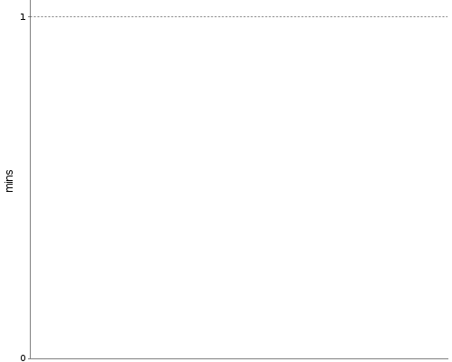

Skip to content
This site is a static archive, we moved to
Travis & GitLab CI
-
[Issue]
DISABLE AUTO REFRESH
Jenkins
All
D_aegir-debian-build-3x-old-2015-10
Back to Dashboard
Status
Changes
Git Polling Log
trend
Build History
x
Timeline
Build Time Trend

Build
Duration